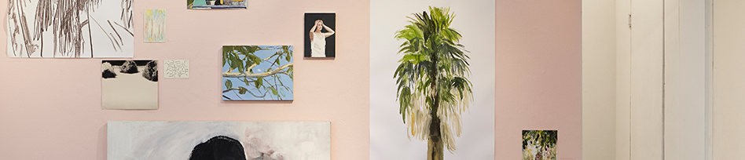

<!--=include _include/_gnb.html -->

<!--=include _include/_header.html -->

<section class="contents section2">
  <div class="inner-box">
    <div class="position">
      
      <div class="position-box">
        <p class="position-box-title">Critique</p>
      </div>
    </div>

    <ul class="exhibit">

      <li class="exhibit-wrap">
        
        <a href="artwork_critique_detail_page_eomyujeong.html" class="exhibit-wrap-list">
          <div class="exhibit-wrap-list-title">감각의 각성, 다시 바라보기</div>
          <div class="exhibit-wrap-list-subtitle">기슬기</div>
        </a>
      </li>

      <li class="exhibit-wrap">
        
        <a href="artwork_critique_detail_page_giseulgi.html" class="exhibit-wrap-list">
          <div class="exhibit-wrap-list-title">담백한 그림 속, 이야기</div>
          <div class="exhibit-wrap-list-subtitle">엄유정</div>
        </a>
      </li>

      <li class="exhibit-wrap">
        
        <a href="artwork_critique_detail_page_leejinju.html" class="exhibit-wrap-list">
          <div class="exhibit-wrap-list-title">잠재된 기억을 소환하다</div>
          <div class="exhibit-wrap-list-subtitle">이진주</div>
        </a>
      </li>

      <li class="exhibit-wrap">
        
        <a href="artwork_critique_detail_page_yunbyeongju.html" class="exhibit-wrap-list">
          <div class="exhibit-wrap-list-title">도시를 탐사하는 세계 관찰자</div>
          <div class="exhibit-wrap-list-subtitle">윤병주</div>
        </a>
      </li>
    </ul>
  </div>
</section>

<!--=include _include/_footer.html -->